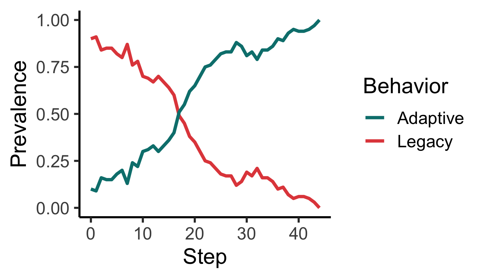
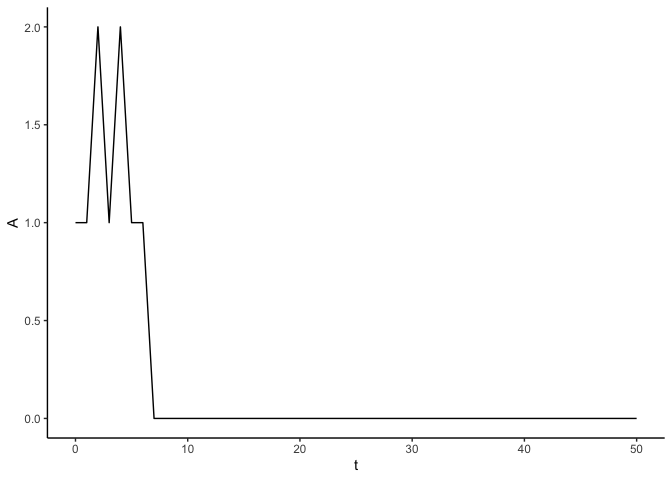
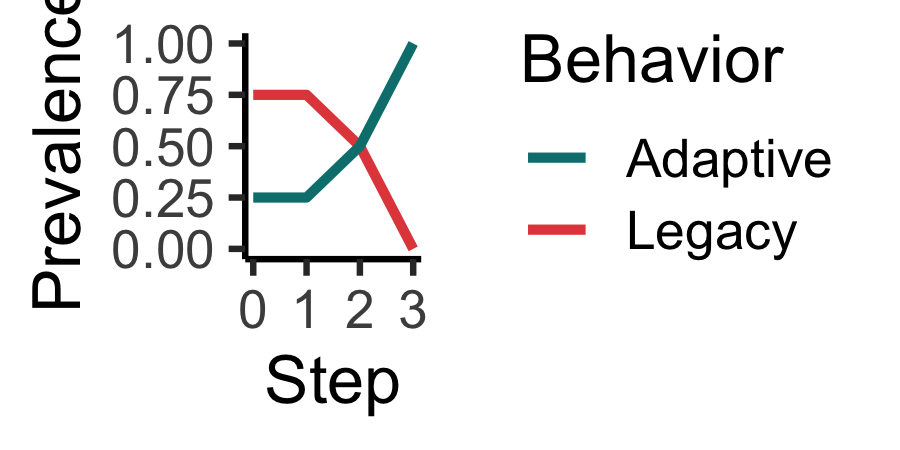
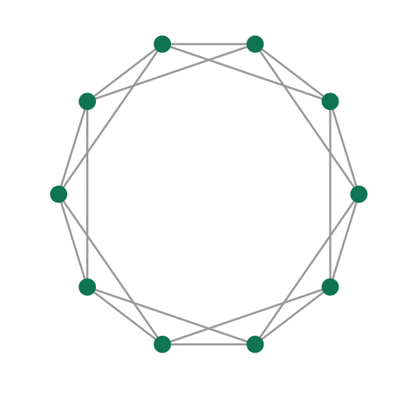
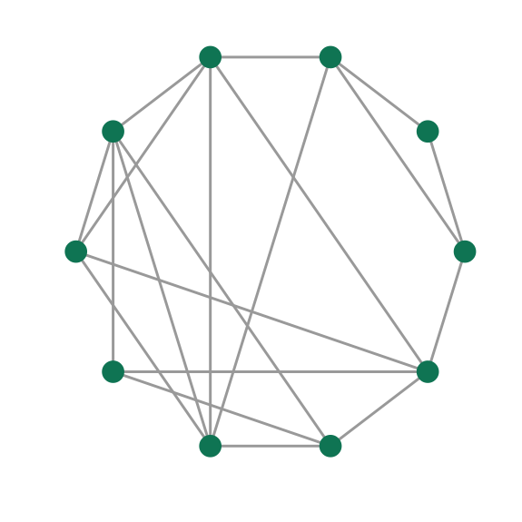
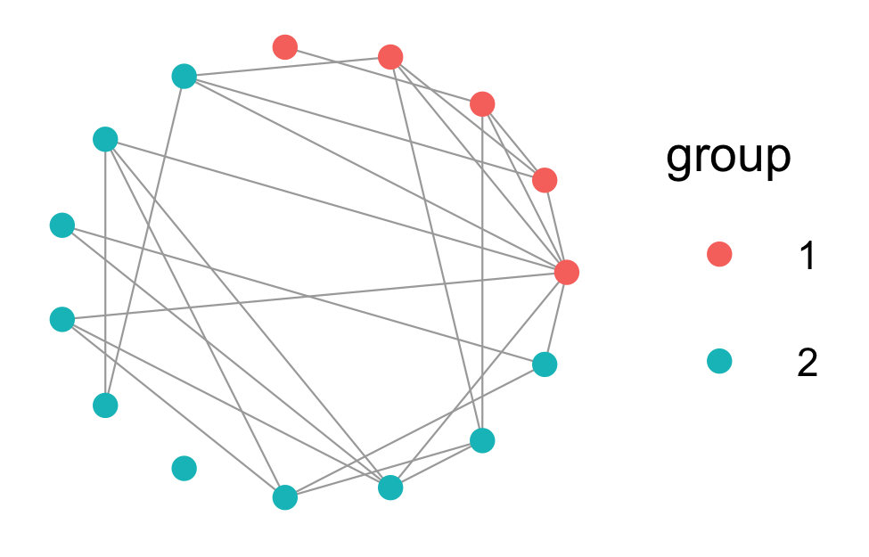
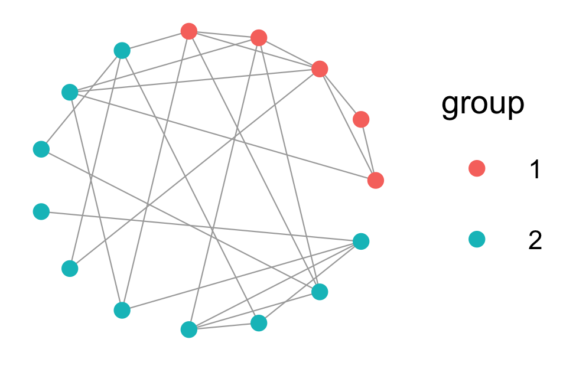

socmod provides a framework and utilities for developing simulations of social learning and social influence structured by social networks. It is being developed to support the course Computational Social Science for Sustainability at the Stanford Doerr School of Sustainability. The course teaches theory and techniques for understanding cognitive and social mechanisms influencing beliefs and behaviors that can be combined in computational models to predict the relative efficacy of different candidate interventions for sustainability, e.g., to promote ecological protection, public health, economic security and justice, climate action, to name just a few sustainable development goals.
socmod is flexible to encapsulate any social process that can be modeled as follows: (1) individuals are initialized with some knowledge and payoff from behaviors they do or or beliefs they hold; (2) they exchange information socially over time through teaching, observation, discourse, etc. This process is illustrated in this figure:

Currently the focus of socmod is developing models of informational and behavioral interventions to promote sustainable behaviors that we call adaptations, . Those not yet doing are said to be doing a legacy behavior, . Each agent can be assigned or gain fitness that is tracked over time, which can be linked to whether they do or .
socmod provides tools for initializing simulated individuals (i.e., agents), their social networks, and their behaviors. These capabilities are introduced in a simple example below.
Installation
You can install the development version of socmod from GitHub with devtools or pak:
devtools
# Install this if you don't have devtools.
install.packages("devtools")
devtools::install_github("css4s/socmod")pak
# Install this if you don't have pak.
install.packages("pak")
pak::pak("css4s/socmod")Quickstart examples
To understand what socmod does to help organize and develop models of social behavior, let’s consider a simple example with just four individuals illustrated in the figure below. We will initialize our agents with behaviors and payoffs as shown here, then explain how to use different social learning strategies to simulate the diffusion of the adaptation, . yields a payoff of 2 while the legacy behavior yields a payoff of 1. This matters only for the success-biased social learning strategy, not for the frequency-biased strategy or unbiased contagion learning.
We can initialize these agents and their network as follows. In the next code block we first initialize four agents named “i”, “n_i1”, “n_i2”, and “n_i3” to match the illustration of focal/learner agent and its three neighbors (each one is an instance of the socmod::Agent class). Then we create the social network from the illustration using igraph. Finally, we initialize a new socmod::AgentBasedModel using the helper function make_example_abm. In the next subsection we then use this helper function to initialize new models that will be run with frequency- and success-biased adaptive learning strategies, using learning functions provided with socmod. After that we show how to define non-adaptive contagion learning functions, adapted from compartmental epidemiological modeling.
make_example_abm <- function(legacy_fitness = 1.0, adaptive_fitness = 2.0, ...) {
# Example ABM builder with four agents as pictured above. Can pass arbitrary
# named parameters in ... that will be passed to make_abm as additional
# model parameters.
agents <- c(
Agent$new(1, name = "i", behavior = "Legacy", fitness = legacy_fitness),
Agent$new(2, name = "n_i1", behavior = "Legacy", fitness = legacy_fitness),
Agent$new(1, name = "n_i2", behavior = "Legacy", fitness = legacy_fitness),
Agent$new(1, name = "n_i3", behavior = "Adaptive", fitness = adaptive_fitness)
)
# Initialize network.
socnet <- igraph::make_graph(~ 1-2:3:4, 3-4)
# Create the agent-based model and plot the model's network.
return (make_abm(make_model_parameters(graph = socnet), agents = agents, ...))
}
abm <- make_example_abm()
# Visualize social network to ensure it was created properly.
ggnetplot(abm$graph) +
geom_edges(linewidth=0.1) +
geom_nodes(color = "#008566", size=4) +
# `name` in label = name was set automagically during ABM construction.
geom_nodelabel_repel(aes(label = name), size = 2) +
theme_blank()
Model dynamics with different adaptive social learning strategies
Here we set up three different models with each of the three learning strategies provided by socmod: success-biased, frequency-biased, and contagion learning.
Success-biased learning
In success-biased learning, the probability a learner adopts a behavior is proportional to the relative fitness of their neighbors. Note that in the simplest model of success-biased transmission, if there is only one agent doing , then this agent always adopts on the first time step. There is a “stubbornness” parameter that can be passed as a model parameter that represents how frequently an individual ignores social information and continues using their current behavior.
Success-biased learning is the default, so we do not have to specify it explicitly.
abm <- make_example_abm()
trial <- run_trial(abm, stop = fixated)
print(tail(trial$get_observations(), n = 10))
#> # A tibble: 10 × 4
#> t agent Behavior Fitness
#> <dbl> <chr> <chr> <dbl>
#> 1 6 n_i2 Adaptive 2
#> 2 6 n_i3 Legacy 1
#> 3 7 i Legacy 1
#> 4 7 n_i1 Adaptive 2
#> 5 7 n_i2 Legacy 1
#> 6 7 n_i3 Adaptive 2
#> 7 8 i Legacy 1
#> 8 8 n_i1 Legacy 1
#> 9 8 n_i2 Legacy 1
#> 10 8 n_i3 Legacy 1
plot_adoption(trial, tracked_behaviors = c("Legacy", "Adaptive"))
Frequency-biased learning
In frequency-biased learning, the probability a learner adopts a behavior is proportional to the number of network neighbors doing a behavior. In the first time step, then, has a 1/2 probability of adopting , and has a 1/3 probability of adopting . Frequency-biased learning is not the default, so we need to explicilty specify its use in our model parameters by passing frequency_biased_learning_strategy to the make_model_parameters helper function:
abm <- make_example_abm()
trial <- run_trial(abm, stop = fixated)
print(tail(trial$get_observations(), n = 10))
#> # A tibble: 10 × 4
#> t agent Behavior Fitness
#> <dbl> <chr> <chr> <dbl>
#> 1 4 n_i2 Adaptive 2
#> 2 4 n_i3 Adaptive 2
#> 3 5 i Adaptive 2
#> 4 5 n_i1 Legacy 1
#> 5 5 n_i2 Adaptive 2
#> 6 5 n_i3 Adaptive 2
#> 7 6 i Adaptive 2
#> 8 6 n_i1 Adaptive 2
#> 9 6 n_i2 Adaptive 2
#> 10 6 n_i3 Adaptive 2
plot_adoption(trial, tracked_behaviors = c("Legacy", "Adaptive"))
Networks
Socmod provides some helper functions to create and plot some important network types, shown below.
Regular lattice
latnet <- socmod::make_regular_lattice(N = 10, k = 4)
ggnetplot(latnet, layout = \(g) 0.6*layout_in_circle(g)) +
geom_edges(linewidth=0.2, color="darkgray") +
geom_nodes(color = "#008566", size=1) +
theme_blank()
Random networks
Erdős–Rényi
gnm_net <- G_NM(20, 30)
ggnetplot(gnm_net) +
geom_edges(linewidth=0.2, color= "darkgray") +
geom_nodes(color = "#008566", size=.75) +
theme_blank()
Small-world networks
sw_net <- make_small_world(N = 10, k = 4, p=0.3)
ggnetplot(sw_net, layout = \(net) 0.6*layout_in_circle(net)) +
geom_edges(linewidth=0.2, color="darkgray") +
geom_nodes(color = "#008566", size=1) +
theme_blank(base_size = 12)
Preferential attachment networks
pa_net <- make_preferential_attachment(N = 100)
ggnetplot(pa_net, layout = \(net) 0.6*layout_with_fr(net)) +
geom_edges(linewidth=0.2, color="darkgray") +
geom_nodes(color = "#008566", size=0.35) +
theme_blank()
Homophily networks
Homophily may be set globally, i.e., symmetrically, so each group has the same proportion of within- to between-group connections. It may also be set asymmetrically, so groups have different group-level homophily.
These network models are defined by homophily levels and group size, altogether defining what we call group structure, or metapopulation structure borrowing from epidemiological use.
Symmetric homophily
Positive symmetric homophily in this example makes within-group social connections 50% more likely than between-group connections. In other words, 75% of all ties are within-group and 25% are between group. The metapopulation is composed of two groups with population sizes 5 and 10.
# Two groups size 5 and 10.
hnet_2grp <- make_homophily_network(c(5, 10), mean_degree = 3, homophily = 0.5)
ggnetplot(hnet_2grp, \(net) 0.6*layout_in_circle(net)) +
geom_edges(linewidth = 0.15, color="darkgray") +
geom_nodes(aes(color = group), size = 1.25) +
theme_blank(base_size=8)
Now symmetric anti-homophily of -0.5 leads to 50% fewer within-group connections than between-group. Now the metapopulation is composed of five groups with five members each.
library(ggsci) # some nice colors for science, using Amer. Assoc. for Adv. Science theme below
# Five groups all size 5 with out-group preference (neg. homophily).
hnet_5grp <- make_homophily_network(rep(5, 5), mean_degree = 2, homophily = -0.5)
ggnetplot(hnet_5grp, \(net) 0.6*layout_in_circle(net)) +
geom_edges(linewidth = 0.215, color="darkgray") +
geom_nodes(aes(color = group), size = 2) +
ggsci::scale_color_aaas() +
theme_blank(base_size=12)
Asymmetric homophily
If homophily is set at the group-level instead of globally, we call this asymmetric homophily. Below we create an asymmetric homphily network model of the educational structure of colonialized populations, where a small, insular minority group of colonizers imposes information flow from themselves to a larger, local majority group, who have had their homophily level forcibly reduced. We model insularity among the colonizers as a high homophily of 0.9 and represent the situation for the local community as having a slightly negative homophily level, -0.2:
# Two groups size 5 and 10.
hnet_asymm <- make_homophily_network(c(10, 30), mean_degree = 8, homophily = c(0.9, -0.2))
ggnetplot(hnet_asymm, \(net) 0.6*layout_in_circle(net)) +
geom_edges(linewidth = 0.15, color="darkgray", alpha = 0.6) +
geom_nodes(aes(color = group), size = 2.25) +
theme_blank(base_size=12)
More information and the philosophy of socmod
Different models of social behavior are specified by the details of how many individuals are in a population, what behaviors or opinions they do or have, what benefits they accrue(d) through their behaviors, how they learn or influence one another, and any environmental or other relevant factors. This framework seeks to encapsulate different approaches to modeling diverse social behaviors, such as those thoroughly reviewed in Paul Smaldino’s (2023) textbook Modeling Social Behavior.
Technically, socmod uses object-oriented programming, provided by R6, and functional-style agent and model behavior specification inspired by Agents.jl, which I myself have enjoyed using. But, I still had to do my plotting in R, and more beginning students across disciplines will tend to know R than Julia. R also seems to have a great community with the r-lib project that seems to be bringing a continuity to scientific programming that I have not seen in any other programming language.